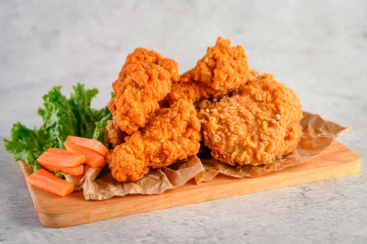
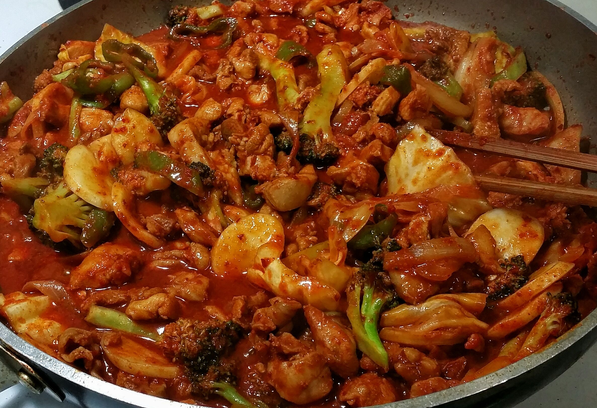
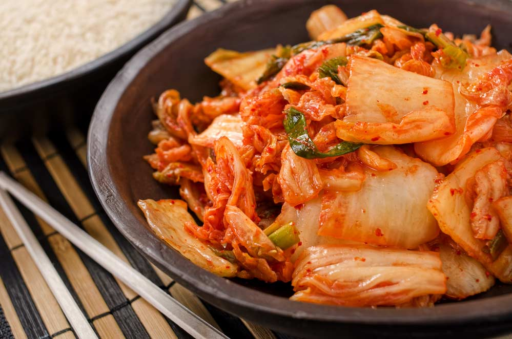
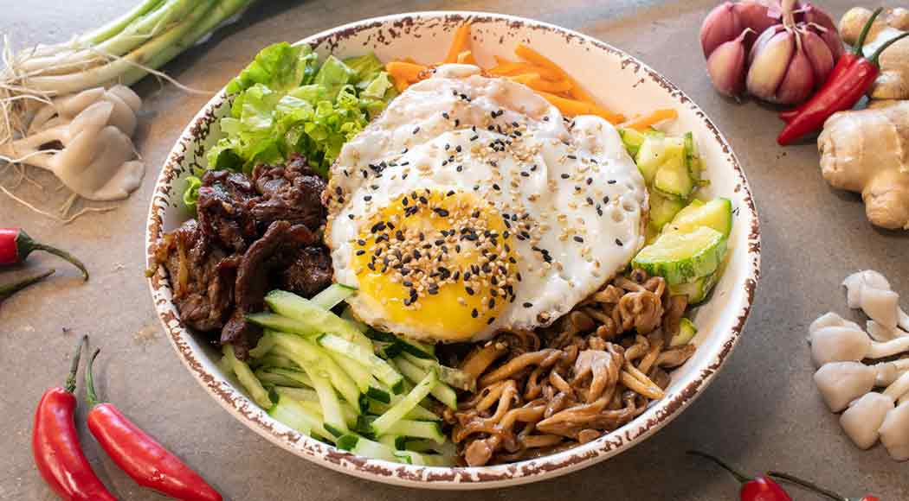
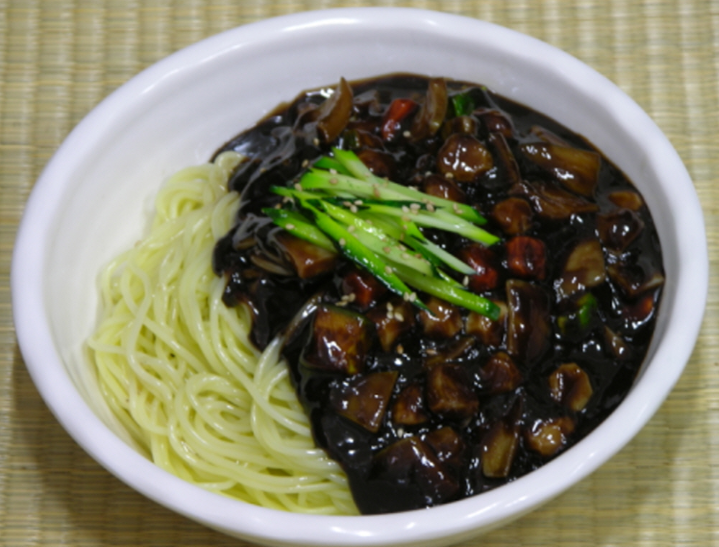
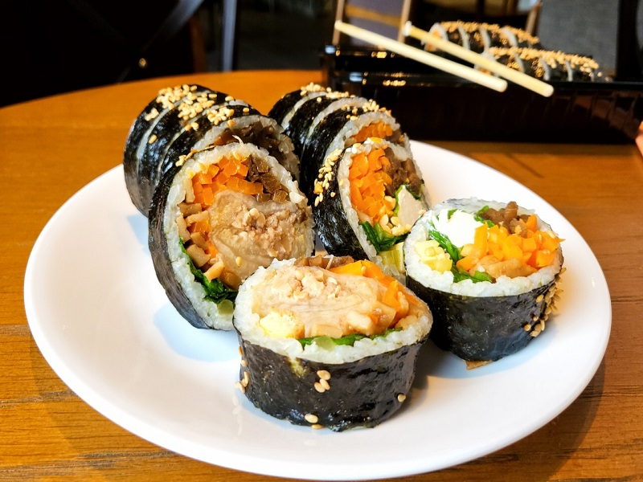
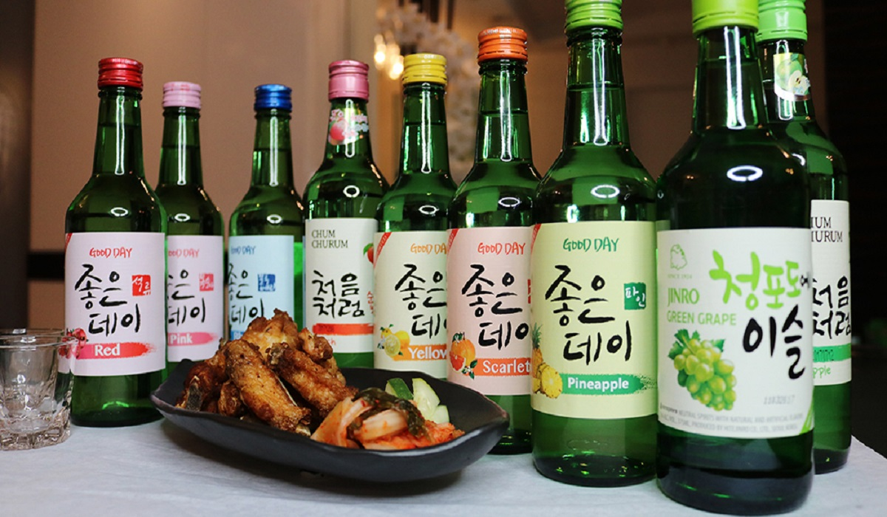
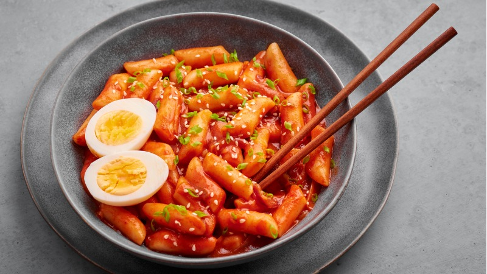

O que são os chamados Doramas?
As novelas asiáticas de drama, também conhecidas como doramas,
caíram no gosto popular e se tornaram uma febre ao redor do mundo.
Estas séries possuem poucos episódios e são perfeitas para maratonar.
Os dramas coreanos românticos (k-dramas) são os mais populares,
mas por toda a Ásia essas séries são produzidas e cultuadas por legiões de fãs.
O gênero de romance é sem dúvida um dos mais frequentes nos doramas.
As histórias cativantes, fofas e engraçadas
divertem e conquistam telespectadores de qualquer nacionalidade.
K-Dramas

CURIOSIDADE: Segundo registros históricos,
os K-dramas surgiram durante a ocupação japonesa na Coreia do Sul.
A princípio, eles eram radionovelas e, posteriormente, o conteúdo migrou para a televisão.
Essas produções tem semelhança com as séries televisivas estadunidenses,
mas possuem suas próprias características.
Dramas Chineses
Se você curte doramas, provavelmente vai querer conferir algumas dessas produções chinesas!
Assim como os populares doramas coreanos,
os chamados C-Dramas já conquistaram o reconhecimento do mercado de novelas asiáticas e,
principalmente, o coração dos fãs do gênero. Romance, mistério, ação.
Tem de tudo um pouco e disponível em streamings para conferir agora mesmo!
Eles são semelhantes aos dramas de televisão da América do Norte,
entretanto, muitas vezes possuem um número maior de episódios.
A China possui a emissora CCTV-8, que é um canal com transmissão
de dramas vinte e quatro horas por dia, além disso, é o país que mais os produz.
C-Dramas
CURIOSIDADE: Em 2014 foram mais de 15.000 episódios. O gênero mais popular é o de romance e de fantasia, com 47 deles na lista dos 50 dramas mais vistos no país em 2016.
Dramas Japoneses
Os dorameiros de plantão já sabem: não existe só dorama coreano.
Mas a popularidade das produções da Coreia do Sul é inegável,
logo nem todo mundo está por dentro das opções que vêm de países como o Japão,
por exemplo. Mas os chamados J-dramas também já conquistaram seu espaço nesse mercado,
e tem opção para todos os gostos disponíveis em streamings para ver agora mesmo.
Os dramas japoneses costumam ser transmitidos
em temporadas que duram três meses, com novos dramas sendo
exibidos a cada temporada. Elas seguem uma cronologia específica de acordo
com as quatro estações do ano. A maior parte dos dramas
japoneses contêm em média de 9 a 12 episódios exibidos semanalmente
(noturnos) ou por vários meses (diurnos e vespertinos).
J-Dramas
CURIOSIDADE: Os J-dramas têm uma carga de respeito
e lição de moral em quase todos os doramas. Dado à religiosidade aflorada,
típica do Japão, a maioria dos doramas apresentam
templos budistas nas histórias, ou banhos em águas termais.
São frequentes o uso do dialeto local como “-kun”, “-chan” e “-san” no final
do nome dos personagens, que são formas de tratamento e diálogo,
dependendo do grau de intimidade e cerimonialismo.
Questionário para as dorameiras(os)
Sobre dramas asiaticos:
Comida da Coreia do Sul: o que os coreanos comem?
Cada comida da Coreia do Sul conta um pouco da história desse país asiático que transita com imensa fluidez entre o tradicional e o moderno. Menos conhecida que outras gastronomias orientais, como a japonesa, a chinesa e até a tailandesa, a culinária sul-coreana vem, aos poucos, se popularizando fora do continente e ganhando adeptos apaixonados. Picantes, exóticos, fermentados, os pratos mais tradicionais da Coreia do Sul vão te ensinar muito sobre o país, seja pelas ruas da futurista Seul ou após uma noitada nas baladas de Gangnam. Veja só!
A comida típica da Coreia do Sul tem várias “caras”: os sabores variam entre o suave e o acentuado, do arroz à pimenta, incluindo combinações agridoces que oferecem uma explosão de sabor a cada mordida. E não pense que você precisa procurar restaurantes tradicionais para desfrutar de uma refeição saborosa e nutritiva! Até mesmo barracas de rua modestas podem te apresentar pratos deliciosos, dignos de restaurantes premiados! Esta, afinal, é uma das principais características da gastronomia sul-coreana: sua versatilidade.
Chikin coreano
O chikin é uma comida da Coreia do Sul bastante popular nas celebrações de happy hour ao redor do país. Para o preparo do prato, o frango deve ser temperado com alho, soja e pastas de pimenta antes de ser frito: o acompanhamento ideal para uma cerveja bem gelada após o expediente!
Dak Galbi
O dak galbi é uma comida da Coreia do Sul à base de frango consumida tradicionalmente nos churrascos coreanos, ou seja, churrascos preparados em uma chapa sobre a mesa. A receita leva frango desossado e frito, acompanhado por molho picante, batata-doce e vários vegetais. Em geral, o dak galbi é servido como acompanhamento do tteokbokki, mas também pode ser consumido como refeição principal. O prato é finalizado com muito arroz, queijo, gergelim e pedaços de alga.
Kimchi
Seja como acompanhamento ou prato principal, o kimchi é a comida da Coreia do Sul mais consumida: uma verdadeira unanimidade em um país com quase 52 milhões de habitantes. O prato é tão popular que também é amplamente consumido na vizinha Coreia do Norte! A iguaria é uma conserva de acelga que leva pasta de pimenta, temperos como alho e gengibre, além de outros condimentos, que podem variar de região para região, incluindo molho de peixe e açúcar. Para garantir a acidez que torna o kimchi tão apreciado é necessário que a conserve fermente, o que é considerado excelente para a manutenção da saúde digestiva. Apesar dos ingredientes com sabores fortes, o prato costuma ser consumido a qualquer hora do dia, seja no café da manhã, no almoço, no lanche da tarde ou no jantar.
Bibimbap
A tradução literal do nome bibimbap é “arroz ou comida mesclada”. Na prática, é exatamente isso que você pode esperar dessa popular iguaria sul-coreana: arroz acompanhado por vários outros ingredientes. Em geral, o bibimbap é feito à base de legumes misturados a carnes variadas e servidos sobre uma generosa porção de arroz. O prato é finalizado com ovo frito, óleo de gergelim e a tradicional pasta de pimenta. Não é incomum que outros tipos de carne, como bife de boi cru, peixes crus, de frango ou porco, sejam utilizados no preparo. A iguaria deve ser servida em uma panela de pedra quente, a fim de manter a temperatura estável enquanto você estiver comendo. A forma correta de consumir essa delícia, por sua vez, é misturando todos os ingredientes.
Jjajangmyun
O jjajangmyun é um prato de origem chinesa que caiu no gosto dos sul-coreanos como uma iguaria celebrativa e se transformou em paixão nacional. Os estudiosos apontam que o manjar, chamado de chunjjang quando servido frio, chegou à Coreia do Sul há mais de um século, levado por imigrantes chineses que se instalaram no país. Conhecido como “prato dos solteiros”, por ser o pedido nº 1 nos serviços de entrega das maiores cidades do país, o jjajjangmyun é um macarrão misturado a uma pasta de feijão preto e pedaços de carne suína.
Kimbap
Se o Japão tem o sushi, a Coreia do Sul tem o kimbap, um rolinho que leva arroz e outros ingredientes, enrolados por uma alga. À primeira vista, os dois pratos asiáticos podem parecer exatamente iguais, mas os ingredientes envolvidos são diferentes. Em vez de peixe cru, o kimbap leva carne (ou bulgogi, ou patê de peixe, ou kani), além de espinafre, rabanete, pedaços de omelete e bolinho de peixe. Você poderá experimentar essa iguaria em restaurantes especializados ou até mesmo em lanchonetes e lojinhas de conveniência espalhadas pelas maiores cidades.
Soju
O soju não é exatamente uma comida da Coreia do Sul, mas não pode ficar de fora da nossa lista. A bebida coreana é a mais consumida no mundo inteiro! Muitas vezes confundido com saquê, o soju é preparado à base de arroz fermentado, com sabor levemente adocicado. Não é recomendado, porém, subestimar a bebida de gostinho doce, que chega a 45% de teor alcoólico! E como saber se o soju que você está consumindo é mais forte ou mais fraco? É simples: se a bebida tiver sabor de frutas, como uva, ameixa ou outras, é possível que tenha um teor alcoólico mais baixo. Em outras palavras: quanto menos sabor tem o soju, mais puro e forte ele tende a ser! Você pode encontrar a bebida em praticamente qualquer lugar, seja nos restaurantes, nas casas ou nos supermercados e lojas de conveniência, em garrafas do tipo longneck.
Tteokbokki
Recomendado para quem não tem medo de pratos bem picantes, o tteokbokki é uma das comidas de rua mais populares do país: é possível encontrá-lo a preços bem acessíveis em praticamente todos os cantos. O prato consiste em um bolinho de arroz com carne, ovos e condimentos, preparado em formato cilíndrico e embebido em um molho bastante apimentado, apreciado por quem não tem medo de pimenta. No entanto, embora hoje em dia seja conhecido como uma iguaria picante, o tteokbokki não surgiu como um prato apimentado. Nos séculos passados, a forma de preparo era mais simples: apenas um rolinho frito à base de bife e molho shoyu.
Onde assistir?
Conheça alguns fansubs e apps onde você pode encontrar diversos dramas e aproveitar bastante esse universo das telinhas asiaticas
- Wei Fansub
- Drama Fansub
- Drama Club
- Netflix
- Viki
- Dopeka